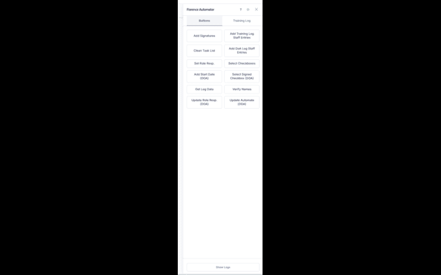

Florence Extension
A Manifest V3 browser extension that injects a right-side workflow sidebar into Florence eBinder / Research Binders. It lets authorized users automate repetitive document-log sign-offs, training-log entries, and study workflow tasks directly from the browser — with persistent settings, progress feedback, and no remote code execution.
The Problem
Florence eBinder (Research Binders) is used to manage electronic document logs, training logs, and study-team workflows. Many high-volume actions require repetitive clicks through large virtual-scroll lists with no built-in batch operations:
- Document log sign-offs must be applied to every entry one at a time.
- Angular CDK virtual scroll lists render only visible rows, making manual batch work tedious.
- Userscripts run in a restricted Tampermonkey sandbox and do not integrate cleanly with extension storage or lifecycle.
- Repetitive form filling across logs depends on remembering context between page loads.
- Chrome Web Store review requires clear privacy disclosures, limited host permissions, and no remote code.
Solution Overview
Right-Side Sidebar
- Fixed sidebar docked to the right edge of Research Binders pages
- 360 px right offset applied to the host page so content is not covered
- Toggle visibility with a configurable keybind (default F2)
- Draggable, theme-aware UI with start/pause/stop controls
Document Log Automation
- Progressive scroll-and-scan loop handles Angular CDK virtual scroll viewports
- Status tracking per entry: pending, found, not found, duplicate
- Configurable scan step, settle delays, retry attempts, and timeout ceilings
- Respects
aria-busystates to avoid interacting during loading
Form Filling & Workflows
- Automated member selection from dynamic filtered dropdowns
- Retry logic for option rendering, virtual scroll lists, and save confirmation
- User-entered Study Library and Training Log state persisted across reloads
- Clipboard helpers for copying generated workflow text
Manifest V3 Compliance
- All code bundled in the extension; no remote code execution
- Host permission limited to
https://us.v2.researchbinders.com/* - Storage permission used only for local settings and user-entered workflow data
- Privacy policy, data-disclosure answers, and reviewer test instructions prepared
Settings & Configuration
- Keybind customization to show/hide the sidebar
- Button reordering and visibility toggles
- Log panel show/hide and theme mode preferences
- Settings stored in
chrome.storage.localand host-origin localStorage where appropriate
State Management
- Run modes and progress survive page reloads via localStorage
- Pause/resume checks at the start of every process function
- Popups restored automatically across navigations
- Robust teardown that clears timers, observers, and idle callbacks
Tech Stack
JavaScript (ES6)
Chrome Extension API
Manifest V3
Content Script
MutationObserver
Virtual Scroll (CDK)
chrome.storage.local
DOM Automation
Screenshots

Challenges & Solutions
- Virtual scroll lists: Florence renders only visible rows in the DOM. I built a scroll-and-scan loop with configurable viewport overscan and settle delays, then re-scans until no new entries appear.
- Dynamic dropdowns: Team-member dropdowns use Angular filtered selects with virtual viewports. The extension waits for the list, filters, scrolls, and retries option selection with explicit save-success detection.
- Extension sandbox vs. userscript APIs:
GM.xmlHttpRequestis unavailable in MV3 content scripts. The code uses standardfetchfor same-origin requests and falls back transparently when running as a userscript. - State across full-page navigations: Research Binders uses full-page navigation, so automation state is persisted in
localStorageand resumes through URL-run-mode routing on page load. - Chrome Web Store review readiness: I prepared a privacy policy, limited host permissions, documented data collection, and included reviewer test instructions so the extension can pass review without public access to the platform.
Outcomes & Impact
- Migrates the Florence Automator userscript into a managed browser extension with proper lifecycle and storage.
- Reduces document-log sign-off workflows from hundreds of individual clicks to a single scan-and-confirm operation.
- Maintains the same defensive automation patterns (retries, pause/resume, logging) while satisfying MV3 restrictions.
- Provides a cleaner install/update path through the Chrome Web Store compared to userscript managers.
Lessons Learned
- Manifest V3 forces explicit permission design; limiting host access to one origin is both more secure and easier to justify to reviewers.
- Content scripts cannot rely on userscript globals like
GM.*; plan for standard web APIs from the start when targeting an extension. - Virtual-scroll automation benefits from a clear "end-of-list" detection rather than scrolling a fixed number of times.
- Preparing privacy disclosures and test instructions early prevents last-minute submission blockers.
Future Improvements
- Background service-worker support for long-running workflows across tabs.
- Export of automation logs to CSV for audit documentation.
- Dark-mode styling that follows the Research Binders theme automatically.
- Keyboard-only navigation for accessibility.